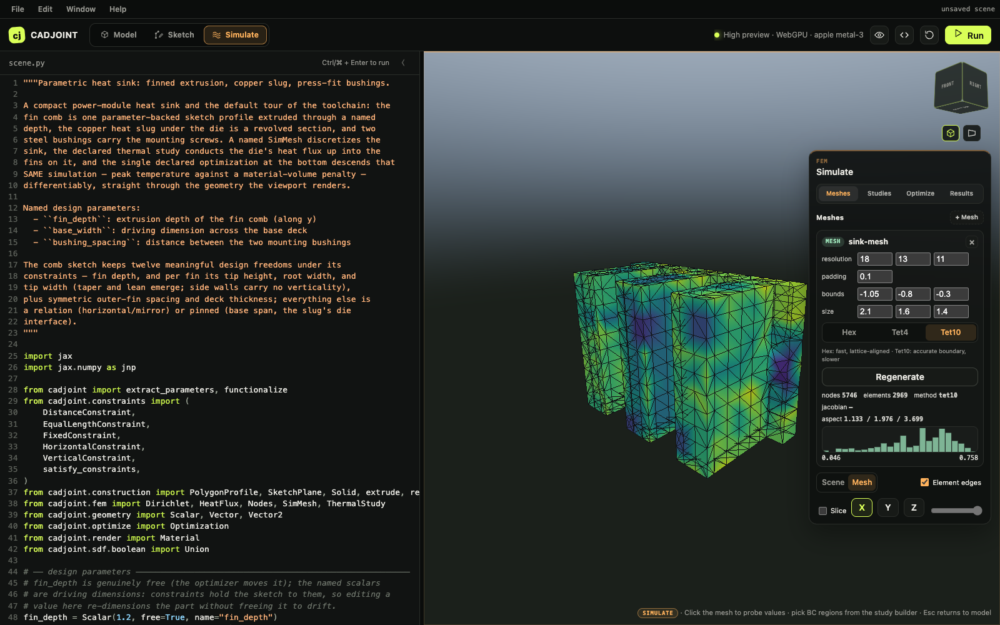
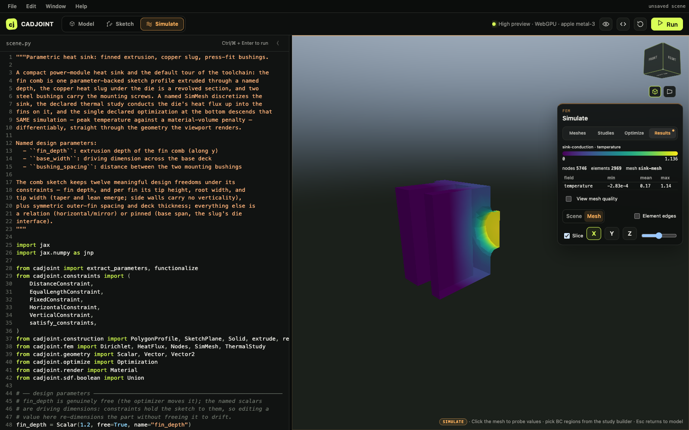

Simulation
cadjoint.fem turns an SDF into a finite-element answer. Both the discretization and the physics are declared — a SimMesh and a study are objects in the scene file, not calls buried in a script — because the same declarations are read by the viewer’s Simulate panel, re-solved by the optimizer, and refrozen every time the geometry moves.
Install the solver stack:
uv sync --extra femDeclare a mesh
A SimMesh names a discretization of an SDF over a sampling lattice.
from cadjoint.fem import SimMesh
from cadjoint.geometry.parameters import Vector
from cadjoint.sdf.primitives import Box
bar = Box(Vector([1.0, 0.15, 0.15], free=True, name="size"))
mesh = SimMesh(
name="bar-mesh",
resolution=(22, 5, 5),
bounds=(-1.1, -0.25, -0.25),
size=(2.2, 0.5, 0.5),
)
print(mesh.inspect(bar))
# {'name': 'bar-mesh', 'method': 'hex', 'nodes': 336, 'elements': 180, ...}bounds and size give the corner and extent of the lattice and must be supplied together; omit both and the mesh scans for them, padded by padding. resolution is always the lattice, not the element count — for tets it is the dual-contouring extraction grid.
Three method values:
method |
Element | How it is built |
|---|---|---|
"hex" (default) |
HEX8 | Voxelize the lattice, Newton-snap boundary nodes onto the SDF. Fast, lattice-aligned, deterministic across platforms. |
"tet4" |
TET4 | Dual-contour the surface, fill it with TetGen. Boundary-conforming. |
"tet10" |
TET10 | The TET4 mesh promoted to straight-sided quadratic tets. Accurate boundary, slower. |
The tet methods need the tetgen package. On the same bar, "tet10" gives 947 nodes across 448 elements against the hex mesh’s 336 nodes and 180 elements.
Judge it
quality() returns per-element metric arrays; inspect() folds them into min/mean/max alongside the counts and bounds. Hex meshes report scaled_jacobian and aspect_ratio; tet meshes report radius_ratio (3·r_in/r_circ, in (0, 1], higher is better) and aspect_ratio (longest over shortest edge, ≥ 1).
q = mesh.quality(bar)
print(sorted(q)) # ['aspect_ratio', 'scaled_jacobian']A voxelized hex mesh of an axis-aligned bar is perfect by construction — every metric is exactly 1.0. The tet10 mesh of the same bar spans radius ratios from 0.146 to 0.941. That spread is what the histogram in the viewer’s Meshes tab shows.

Select nodes
Boundary conditions attach to node selections, not to face groups or index lists. Nodes is a factory namespace whose selections are evaluated against whatever mesh they are handed, so they survive re-meshing and a change of shape.
| Factory | Selects |
|---|---|
Nodes.side("+x") |
One face of the bounding box, within a per-mesh tolerance |
Nodes.box(min_corner, max_corner) |
Inside an axis-aligned box |
Nodes.sphere(center, radius) |
Inside a ball |
Nodes.halfspace(point, normal) |
Where dot(x - point, normal) >= 0 |
Nodes.predicate(fn) |
A vectorized (N, 3) -> (N,) boolean callable |
Three operators combine them: & (intersection), | (union), and ~ (complement). There is no -; write a set difference as a & ~b.
from cadjoint.fem import Nodes
hot = Nodes.halfspace([0, 0, -0.12], [0, 0, -1]) & Nodes.sphere([0, 0, -0.18], 0.4)
ends = Nodes.side("-x") | Nodes.side("+x")
just_one_end = Nodes.side("-x") & ~Nodes.side("+x")Selections always resolve to boundary nodes. ~sel therefore means “the rest of the surface”, never the interior. sel.mask(mesh) gives the boolean array and sel.resolve(mesh) the indices, raising if the selection came out empty — which is how a BC that has drifted off the part during an optimization is caught.
Declare a study
ThermalStudy solves steady-state conduction; ElasticStudy solves linear elasticity. Both take a SimMesh and a list of boundary conditions. Material properties are keyword-only and have no defaults.
import numpy as np
from cadjoint.fem import Dirichlet, Nodes, SimMesh, ThermalStudy
from cadjoint.geometry.parameters import Vector
from cadjoint.sdf.primitives import Box
bar = Box(Vector([1.0, 0.15, 0.15], free=True, name="size"))
mesh = SimMesh(name="bar-mesh", resolution=(22, 5, 5),
bounds=(-1.1, -0.25, -0.25), size=(2.2, 0.5, 0.5))
study = ThermalStudy(
name="bar-conduction",
conductivity=2.0,
bcs=[
Dirichlet(Nodes.side("-x"), 1.0),
Dirichlet(Nodes.side("+x"), 0.0),
],
mesh=mesh,
)
result = study.solve(bar)
temperature = np.asarray(result.temperature)
x = result.mesh.points[:, 0]
print(np.abs(temperature - (1.0 - x) / 2.0).max()) # 4.4e-10The bar is the one case with a closed-form answer — a linear ramp between the two prescribed ends — and the solve reproduces it to 4.4e-10.
The boundary conditions are Dirichlet(nodes, value) and HeatFlux(nodes, flux) for thermal, Fixed(nodes) and Traction(nodes, vector) for elastic. A thermal study needs at least one Dirichlet and an elastic study at least one Fixed, or the system is singular and solve says so. HeatFlux and Traction are integrated over boundary faces, so their selection has to span complete faces rather than isolated nodes.
Units are not declared or enforced anywhere: conductivity, youngs, poisson, source, flux, and vector are plain floats in whatever consistent system you choose.
An elastic study reads the same way:
from cadjoint.fem import ElasticStudy, Fixed, Nodes, SimMesh, Traction
study = ElasticStudy(
name="bar-bending",
youngs=200.0,
poisson=0.3,
bcs=[Fixed(Nodes.side("-x")), Traction(Nodes.side("+x"), (0.0, 0.0, -0.5))],
mesh=SimMesh(name="bar-hex", resolution=(22, 5, 5),
bounds=(-1.1, -0.25, -0.25), size=(2.2, 0.5, 0.5)),
)mesh= and the inline meshing keywords (resolution, bounds, size, domain) are mutually exclusive — meshing intent lives on the SimMesh.
Read the result
solve returns a SimulationResult and also stores it on study.last_result.
print(result.describe())
# {'name': 'bar-conduction', 'kind': 'thermal', 'field': 'temperature',
# 'mesh': 'bar-mesh', 'nodes': 336, 'elements': 180, 'range': [0.0, 1.0], ...}temperature (thermal) and displacement / von_mises() (elastic) give the raw fields; nodal_scalar() gives the per-node field the viewer colours by. mean() and max() are the traced-safe reductions an objective should use — they work under jax.grad, where the concrete accessors do not. to_vtk(path) writes the result out for ParaView.

Backends
solve(backend=...) selects the solver; the default is "jaxfem".
| Backend | Runs | Needs | Gradients |
|---|---|---|---|
"jaxfem" |
jax-fem in-process | fem extra |
jax-fem’s ad_wrapper adjoint; also differentiable w.r.t. prescribed Dirichlet values |
"tesseract" |
the same jax-fem solve behind a Tesseract | fem + tesseract extras |
the Tesseract’s vector_jacobian_product endpoint — bit-identical to the in-process path |
"calculix" |
the CalculiX 2.23 Fortran binary as a subprocess | tesseract extra and a ccx binary |
ccx’s own *SENSITIVITY discrete adjoint, plus a correction for a term missing in 2.23 |
available_backends() lists them and register_backend(name, factory) adds your own; the ABI is the SolverBackend protocol in cadjoint.fem.backends, two methods wide. The survey in simulator ecosystem ranks 31 further candidates for that slot.
Two constraints worth knowing. CalculiX is elastic and HEX8 only, and its differentiability is objective-valued: cotangents on the raw displacement field are refused, because what ccx hands back is a strain energy. And tet meshes ("tet4" / "tet10") solve on the direct jax-fem path only — use a hex SimMesh for the other backends.
Forward solves are not jax.jit-able, because PETSc assembly happens outside the trace. Each backend call enables x64 for its own duration, but code that differentiates through a solve has to set it process-wide itself:
import jax
jax.config.update("jax_enable_x64", True)Further reading
- FEM integration — the
SolverBackendABI, adjoint mechanics, and the ccx 2.23 sensitivity correction. - Meshing — the surface extractor underneath the tet methods.
- Optimization — making a study the objective of a descent.